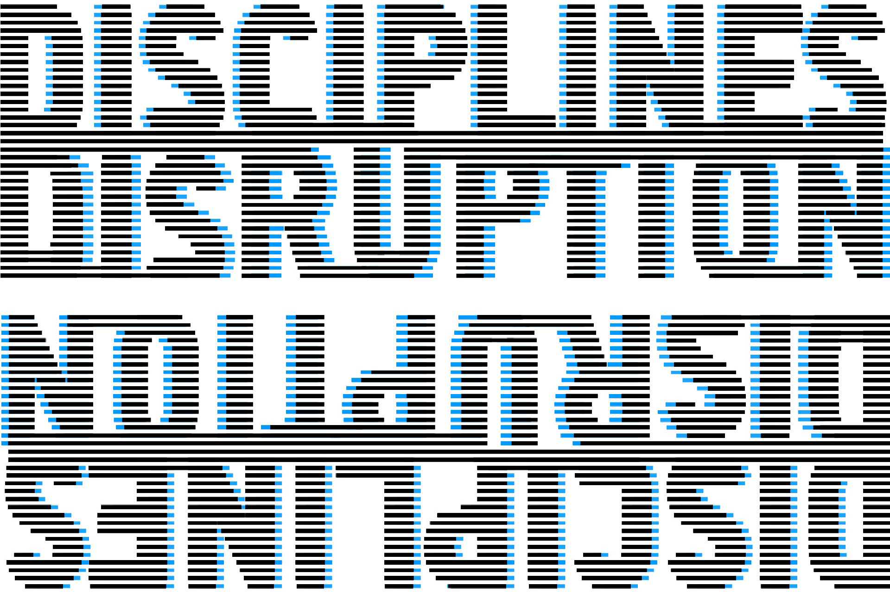
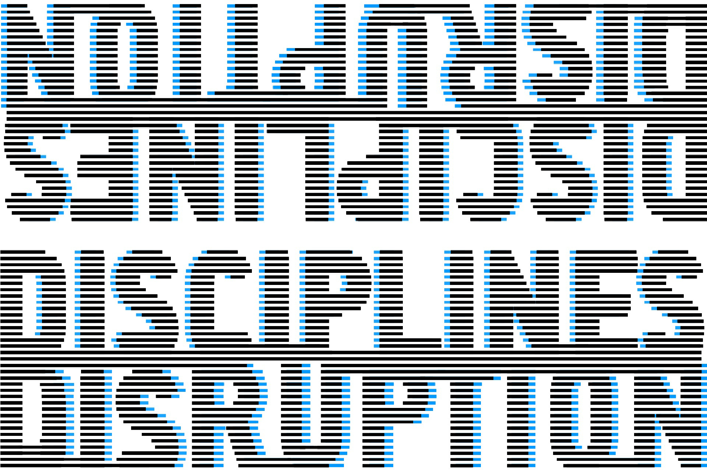
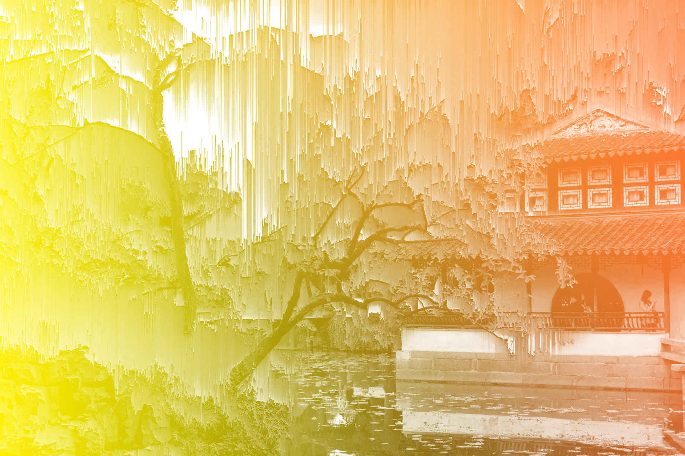
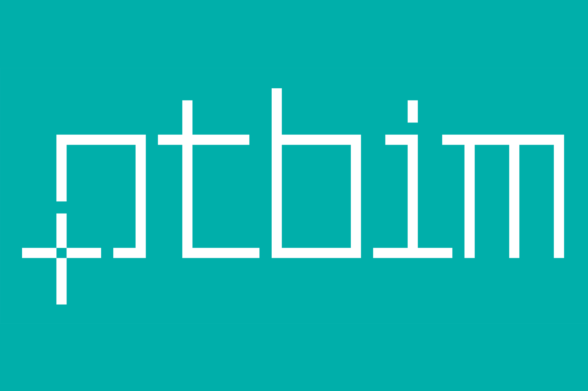
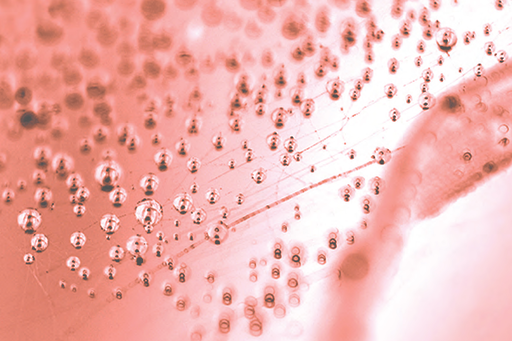

Awards

M.Sc Dissertation Award ptBIM – Architecture
2018
"Integrated Algorithmic Design"
1st Place at IST's PhD Open Days Pitch Competition
2018
"Illustrated Algorithmic Design"

ACADIA Student
Inês Caetano with
"Luna Moth: Supporting Creativity in the Cloud"
ACADIA Student
Scholarship Award
2017
"Luna Moth: Supporting Creativity in the Cloud"

ACADIA Student
Rita Aguiar & Carmo Cardoso with "Algorithmic Design and Analysis Fusing Disciplines"
ACADIA Student
Scholarship Award
2017

Young CAADRIA
Inês Caetano with
"Integration of an Algorithmic BIM approach in a Traditional Architecture Studio"
Young CAADRIA
Award
2017
"Integration of an Algorithmic BIM approach in a Traditional Architecture Studio"

M.Sc Dissertation Award ptBIM – Architecture
Sofia Feist with
"A-BIM: Algorithmic-based Building Information Modelling"
M.Sc Dissertation Award ptBIM – Architecture
2016
"A-BIM: Algorithmic-based Building Information Modelling"

eCAADe Runner Up for Best Presentation Prize
António Leitão with
"Programming Languages for Generative design: Visual or Textual?"
eCAADe Runner Up for Best Presentation Prize
2011
"Programming Languages for Generative design: Visual or Textual?"
Publications
our published work
Talks
talks given by our team members
Timeline
our research topics and projects